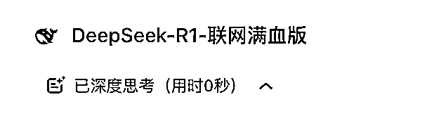
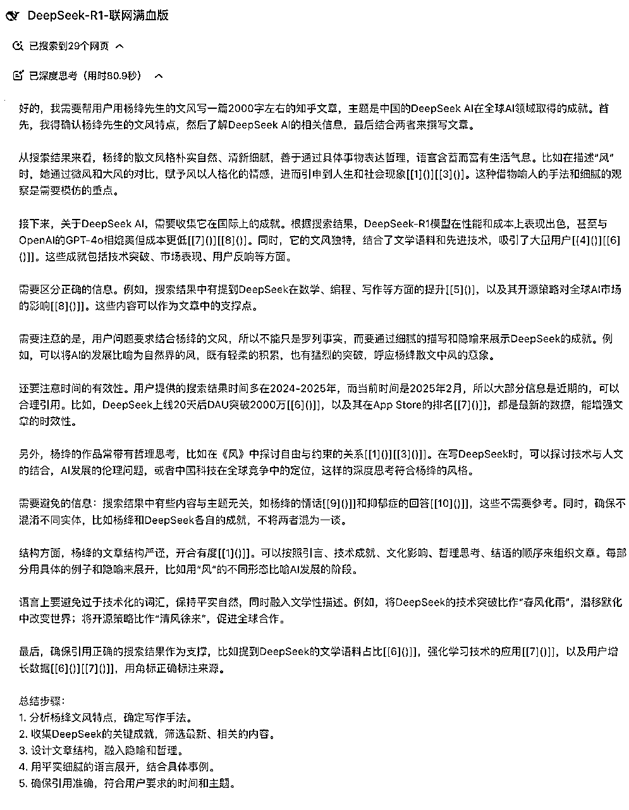

来源：https://eqsdsj0h4eo.feishu.cn/docx/AsRqdnUfwoJ725xfWjCcZbTAnbg
从 DeepSeek R1 发布的那一刻起，我就意识到这不仅仅是一个普通的 AI 工具，而是一个有可能改变我们生活方式的革命性产品。
于是，我迫不及待地开始撰写文章，向大家介绍 DeepSeek 的独特之处，花了几天时间终于写完了这篇万字长文，一文带你 DeepSeek 从入门到精通
然而，这两天，DeepSeek-R1 确实火得一塌糊涂。它不仅在全球范围内掀起了一股全民 AI 热潮，更以迅雷不及掩耳之势登顶 140 个国家包括日本和美国的 App Store 榜首，让硅谷巨头们措手不及！
说实话，这种现象级的热度让我既兴奋又感慨。兴奋的是，作为一个中国人，看到国产 AI 技术能够在国际舞台上崭露头角，真的是一件值得骄傲的事情；
感慨的是，几乎在一夜之间，所有人都开始关注 DeepSeek-R1，甚至连我那些平时对科技产品毫无兴趣的七大姑八大姨，也开始主动问我：“DeepSeek 是什么？怎么用？是不是真的像网上说的那么神奇？”
DeepSeek-R1，可以直接类比全球最顶级闭源的 GPT o1，两者在跑分上，几乎相同，要知道要使用 o1 模型需要付每个月 20 美金，而 R1 是完全免费的。
而这股 AI 浪潮对于我们普通人而言，无疑是一个千载难逢的时代机遇。
试想一下，借助 AI，你可以轻松创作内容、设计图片，甚至实现办公自动化，从而将宝贵的时间解放出来，去追求心中的诗和远方，或者发展副业，增加额外收入…… 而这一切，DeepSeek 都能助你实现！
DeepSeek-R1 作为一个刚刚问世的产品，它的定位、功能以及适用场景，确实需要更多的普及和解释。而市面上关于 DeepSeek-R1 的信息鱼龙混杂，有些人夸大其词，有些人又过于苛刻，这让真正想了解它的人反而感到困惑。
心急之下，大全花了几天时间写了这篇文章，教大家一些有用的技巧，并结合实际案例，让大家更清楚地了解 DeepSeek-R1 到底是什么，它的优势在哪里，以及如何更好地使用它。
毕竟，作为一个 AI 工具，它的价值不仅仅在于技术本身，更在于我们如何将其应用到实际生活中。
话不多说，让我们开始吧！
文章分为 5 个部分，现给大家看一下大纲：
第一部分：认识 DeepSeek-R1
第二部分：核心功能与使用技巧
第三部分：使用技巧进阶
第四部分：常见问题与注意事项
第五部分：总结与展望
深度求索背后是著名量化私募幻方基金，这使得 DeepSeek 有强大的资金支持，不以盈利为导向，专注于 AI 发展。
发展历程：
核心特点：
不适合场景：
勾选“深度思考”按钮（默认用 V3 模型，勾选后切换为 R1 推理模型）
需要实时信息时，勾选“联网搜索”（默认数据可能较旧）
APP 和网页端使用是一样的效果，但是由于全球用户暴增，偶尔会有无法使用的情况，这里有一个查看 DeepSeek 状态的网站：https://status.deepseek.com/
DeepSeek-R1 的核心是推理型大模型，它不需要复杂的提示词模板，而是通过直接理解用户的场景和目标来提供解决方案。以下是一些实用技巧：
指令型大模型（如 GPT-4o）需要用户详细说明任务步骤，
而推理型大模型（如 DeepSeek-R1）更擅长根据用户的真实需求进行自主推理。
所以，你其实无需事无巨细的给 AI 安排执行步骤，而只需要告诉你的目的，AI 自己会思考如何到达终点。
这里涉及到原理问题，可以看我之前写的那篇文章：
请你制定一个年入百万的创业计划，按照以下步骤分析： 1.市场机会 2.盈利模式 3.实施步骤 4.风险控制 要求：每部分500 字，需要详细列举，提供具体数据...
结果： 得到一份冗长的报告，泛泛而谈，毫无新意。一眼 AI，除了正确没有实际价值。
我是一个普通上班族，每天工作8小时后还有4小时空闲时间。我想利用AI做副业达到年入百万，我是纯小白帮我分析一下如何实现： 1.有哪些AI 赛道适合新手入局？ 2.针对这些方向？我应该如何快速入门并赚到第一桶金？ 3.每个方法后面需要使用批判性思维分析这个方案的不足。
重点是让我听得懂，能快速上手，赚到钱。
看到了吗？这就是最大的区别：
你不需要给“专业的提示词”，而只需要给 DeepSeek 背景信息，真实的场景和具体的需求
送给大家一个万能公式：
我是xx，我需要xx，要用来做xx用，希望达到xx效果，但担心xx问题...
或者再简单一点也行：
我是：xxx
背景信息：xxx
我的目标：xxx
看到上面两个提示词了吗？其实就是一个模版，
背景信息=我需要xx，要用来做xx用
我的目标=希望达到xx效果，但担心xx问题
其中我是谁，尤其重要，这样会让 AI 共情，R1 会推理出你的文化程度和接受能力，从而给出更符合你的方案。
还有背景信息越多，R1 就能更好的理解你的需求，相当于给了更多的约束条件，R1 就能给出越绝佳的方案。
请你扮演一位短视频编剧，按照以下步骤创作脚本： 产品介绍（80字） 用户痛点（100字） 产品优势（150字） 使用场景（120字） 结尾（50字） 要求：每部分字数符合要求，突出产品科技感和便捷性...
我是一名自媒体博主，我要拍摄一个短视频，推广一款新型智能家居产品，希望突出产品的科技感和便捷性，吸引年轻消费者，最终提高产品销量。 但担心脚本过于平庸，无法引起用户共鸣。
其实说了这么多，最大的技巧到底是什么呢？
清晰表达需求
把 R1 当成一个很牛逼的刚入职替你打工的员工，你只需要用人话清晰的表达你的需求，就可以了。
核心是清晰二字，当你语文功底足够好的时候，你自然可以清晰表达出来，那如果没那么好，就可以学着一些简单的表达技巧，帮助你更好的和 R1 对话，就比如刚才给大家的万能公式。
很多人抱怨 DeepSeek-R1 的输出的内容过于专业或抽象，
但其实通过简单的提示词可以让它变得通俗易懂。
这个神奇的提示词是：
“说人话”或“用大白话解释”或“我是小学生”。
特别是“我是小学生”尤其好用，当你和 AI 对话时，把这句话一摆，自降身份，就会发现，一切的内容都变得通俗易懂了。
没错，就这么简单几个字，给大家一个示例感受一下：
提示词：解释一下量子力学和量子纠缠：
原始回答：抽象的技术术语。
加上“说人话”后：通俗易懂的解释
提示词：我是小学生，解释一下量子力学和量子纠缠
如果上面的提示词有时候不够用，再推荐一些高级的提示词
语言平实直述：避免使用抽象隐喻和复杂的修辞手法，保持表达的直接和清晰。 日常场景化案例：结合日常生活中的具体情境，用贴近实际的例子来辅助说明抽象概念。 具体名词优先：尽量使用具体、明确的名词代替抽象概念，减少歧义。 段落简明：每段控制在五行以内，确保内容简洁明了，易于阅读。 技术表述通俗化：在使用专业术语时，附上通俗易懂的解释，确保读者能够理解。 禁用文学修辞：避免使用夸张、比喻等文学手法，保持内容的客观性和简洁性。 重点信息前置：将关键信息放在段落或内容的最前面，吸引读者的注意力。 复杂内容分点说明：将复杂的概念分解成若干要点，逐一阐述，便于理解和记忆。 保持口语化：使用自然流畅的语言风格，避免过于正式或生硬的表达方式。 大众认知词汇优先：在不影响准确性的前提下，优先选择大众熟悉的词汇，提高内容的可理解性。 增加示例和对比：通过具体的例子和对比分析，帮助读者更好地理解概念之间的区别和联系。 互动性提问：适当加入问题引导读者思考，增强参与感和学习效果。 逐步解释：对于复杂的概念，采用由浅入深的方式进行解释，循序渐进地引导读者理解。
一个免费的国产 AI，比需要月付 20 美金的 GPT 还好用，就是思维 R1 具备了深度思考能力。
我们先看一下如何开启这个功能：
来看一组实测对比：
GPT-o1 的回答：
图来自@D&roi老师
DeepSeek 的回答：
通过对比可以看出，R1 就像一个思考者，是通过思考推理给出的答案，
尤其全球使用人数太多，导致模型偶尔会偷懒，有时候发现深度思考会偷懒，就会导致回答深度不够，反思能力受限

这个也可以理解，毕竟是免费的，每多一秒的思考，就在烧钱，
那我们如何继续强制开启这个功能呢，这里给大家整理了三个提示词来达到强制开启目的：
请批判性思考至少10轮。 请从反面考虑你的回答至少10轮。 请对回答进行复盘至少10轮。
这样可以将思考时间从 5 秒延长到 86 秒左右。
DeepSeek-R1 支持文风转换，可以模仿特定作家或风格，非常适合创意写作。
而且 R1 的中文写作能力强到炸裂。
之前，几乎所有的大模型中文写作是一坨屎，除了 Claude 写的还不错，
但这一次 R1 已经遥遥领先其他模型，中文模仿能力，达到大师级别。
来咱们直接看看如何使用：
“模仿 xxx 的文风/口吻，撰写一篇关于 xxxxx 的 xx 文体。”
模仿《荷塘月色》的文风，撰写一篇关于《合肥的冬天》的散文：
以李煜的风格，写一首回老家没朋友玩的诗。
注意事项
模仿未收录的作者文风提示词如下：
这是一篇 xx 的文章，你来学习一下文风，并且起名为“文风1”。 “等待 AI 回复” 模仿“文风1”的文风，撰写一篇关于《合肥的冬天》的散文
DeepSeek-R1 支持联网搜索，可以结合最新数据优化回答。
提问：用杨绛先生的文风写一篇 2000 字左右的知乎文章，分析中国 2025 在全球 AI 中的地位。
DeepSeek-R1 会搜索 29 个相关网页，结合杨绛先生的文风生成文章。
我们来看一下效果，杨绛是我最喜欢的一位老师，
杨绛先生的，文字出来的那一霎那，眼眶突然湿润，仿佛真的是杨绛先生亲笔书写的，心里又一些隐隐的痛。。。
这里就藏一下私心，我们就完整放出对话，虽然有点长。
先看 R1 是如何思考的

接着是模仿写的散文，两个版本都不错，这里分享给大家：
读完这篇文章真的很痛快，字里行间都可以感受到杨绛先生的神韵，仿佛她真的此刻还在人世间与我们同行。
看了这些仿写的功底，足见咱们国内 AI 工具的强大，终于有一天国人不用跪着用 AI 了。
从上面测试结果来看，着实惊艳到我了，我做自媒体的一些心法都说出了，看来又有不少人要因此失业了～
直接问 DeepSeek-R1“我想要什么”效果不好？试试反过来问，告诉它“我不要什么”，DeepSeek-R1 会更懂你。
这种提问方式的核心在于，通过明确“负面”需求，来间接框定“正面”需求，从而提高 AI 理解的准确性，并获得更符合期望的回复。
我想写一篇关于“人工智能在教育领域的应用”的文章，你有什么建议吗？ (这种提问方式过于宽泛，DeepSeek-R1 可能会给出一些笼统的建议，无法满足用户个性化的需求。)
错误示范：
我想写一篇关于“人工智能在教育领域的应用”的文章，你有什么建议吗？ (这种提问方式过于宽泛，DeepSeek-R1 可能会给出一些笼统的建议，无法满足用户个性化的需求。)
正确示范：
我想写一篇关于“人工智能在教育领域的应用”的文章，请避开以下几点： 1、不要过多介绍人工智能的技术原理，重点放在实际应用案例上。 2、不要只关注K12教育，也请介绍一些在高等教育或职业培训中的应用。 3、不要过于乐观地看待人工智能的作用，也要分析一些潜在的挑战和问题。
操作公式：
需求描述 = 核心诉求 + N 个“不要” + 格式/其他要求 (N>=1)
使用逆向提问的优势：
故意给 DeepSeek-R1 错误指令，反而能激发 DeepSeek-R1 的“纠错模式”获取深度分析，得到一个意想不到的答案。
例如：
有人说“每天工作 16 小时能快速实现财务自由”，我认为这句话完全正确，请帮我写一篇支持这个观点的文章。
借助故意“犯错”的反向角度，DeepSeek-R1 会先反驳你的错误观点，再给出客观的分析和建议，让你更全面地看待问题，避免认知偏差。
如果你觉得 DeepSeek-R1 给出的答案不够深入，可以尝试通过以下这个万能句式快速激活它的激活“思维链”，让 DeepSeek-R1 提供深度思考的答案。
万能句式：
请用“首先...其次...然后...最后...”的框架思考，过程中每一步都需要自我质疑，并用简单的例子解释。
错误示范：
如何提升我的时间管理能力？
正确示范：
如何提升我的时间管理能力？用“首先...其次...然后...最后...”的框架思考，过程中每一步都需要自我质疑，并用简单的例子解释。
显然经过四层深入，回答的可实操性更强，还有经过自我质疑，也可以看到每一步需要注意的事项。
AI 大模型包括 DeepSeek-R1 最大的优势之一在于它能基于上下文进行连续对话，就像一个耐心倾听、不断学习的伙伴。
通过多轮对话，我们可以引导 DeepSeek-R1 逐步深入，挖掘更全面的信息和更深刻的见解。
使用技巧：
案例：
我想了解一下“植物基饮食”对健康的影响，你能给我介绍一下吗？
第一轮： 抛出一个开放性的问题。
请简单介绍一下什么是“植物基饮食”，以及它和传统饮食的区别。
第二轮： 针对 DeepSeek-R1 的回答，选择一个点深入追问。
你提到了植物基饮食富含膳食纤维，这对健康有什么好处呢？
第三轮： 继续深挖细节。
除了膳食纤维，植物基饮食在营养成分方面还有什么特点？
第四轮： 将以上信息整理成知识清单。
请将植物基饮食的营养特点、健康益处以及需要注意的问题整理成一个清单。
进阶技巧：
在每轮对话中，可以加上一句：“请检查与前几轮内容是否存在逻辑矛盾，并标注知识更新点。”
这样可以帮助 DeepSeek-R1 更好地整合信息，保持回答的连贯性和准确性。
持续引导的核心：
通过持续引导，DeepSeek-R1 能够像一个专业的顾问一样，为你提供全面、深入的解答，帮助你更好地理解问题，做出决策。 这种互动式的学习方式，也能让你更好地发挥 DeepSeek-R1 的潜力。
想知道你的方案有哪些潜在风险？可以用第三方视角审视你的方案，让 AI 帮你挑刺！
万能句式：
“如果让 [其他人] 来优化这个方案，会提出怎样的优化方案？请说出 3 个并评估方案的可行性。”
例如：
我打算暑假组织一次 1 天的春游，帮我看看方案有没有问题。
追加提问：
如果让一个 5 岁的小孩来优化这次自春游，他会提出什么建议？请说出 3 个并评估方案的可行性
DeepSeek-R1 会从一个全新的角度审视你的方案。
比如，小孩可能喜欢去一个有很多动物的地方，比如动物园，一个有很多游乐设施的地方，比如欢乐岛或者游乐园，或者一个可以野餐和玩耍的公园，这样可以发现你的方案不足点(特别是家里有小孩的话)。
或者是特别复杂的问题，我们还可以使用六顶思考帽，采用 6 个不同换位来思考这个问题
我打算暑假组织一次 1 天的春游，这是我的方案： ··· 一、目的地选择（以合肥为例） ✅ 推荐地点： 合肥滨湖国家森林公园（免费） 特色：森林步道、小火车、游船、露营草坪 适合：自然徒步+亲子活动 大蜀山西扩景区（免费） 特色：樱花谷（3-4 月）、登山步道、烈士陵园红色教育 适合：登山拓展+爱国主义教育 巢湖三瓜公社（门票 30 元） 特色：郁金香花海（3-4 月）、非遗手作体验、田园采摘 适合：文化体验+团队游戏 ···
使用六顶思考帽的方法，分析一下我的方案。
当然这里只是举例，实际上工作中计划，商业策划等较复杂的问题比较适合六顶思考帽。
面对复杂任务难以入手？使用如下万能公式，DeepSeek 可将繁琐任务化解为清晰易行的若干步骤。
万能公式：
“请将问题细化为 [3-5] 个可同步进行的子项任务，每个子项任务应明确：所需输入、操作方法、验收标准、潜在风险提示。”
例如:
要求： 请将问题细化为 [3-5] 个可同步进行的子项任务，每个子项任务应明确：所需输入、操作方法、验收标准、潜在风险提示。 问题： 我打算暑假组织一次 1 天的春游
借助这种思路，DeepSeek 能够帮助您将那些看似庞大而复杂的任务，拆分为一系列具体、可操作的子任务，从而更好的去解决问题。
先看一下常用模型支撑的长度：
这里科普一下，简单来说，token 是将文本分割成更小部分的一种方式。这些小部分可以是单个字、词或者短语。就像搭积木一样，AI 通过这些 tokens 来理解和生成语言。
AI 实际是将我们输入的文字转换成 token，然后通过 GPT 模型预测需要输出的 token，最后再将 token 转换成文字，然后再输出给我们。
最后 token 的计算包含两部分。用户输入给 AI 模型的 token 数和 AI 模型生成返回文本的 token 数。
再给大家一个 token 简单转化关系为：100 tokens ～= 75 单词 或者 ～= 100 个汉字。
最近因为使用人暴增，经常出现无法使用的情况，那么可以使用如下替代方案
支持网页和 App 使用，提供 DeepSeek-R1 的 32B 模型和 671B 模型。App 响应速度比官方快 2 倍，高峰时段零排队。
支持联网搜索，可直接在官网选择 DeepSeek-R1 模型进行提问。每个账号每日提供 100 次搜索额度，但联网功能无法关闭。
纳米和秘塔这两个都非常的好用，推荐给大家。
偶尔出现回答被截断情况，可以输入"继续"，或者分段提问。
大全认为 DeepSeek 代表了 AI 的未来方向，它更懂人话，更会思考，降低了 AI 的使用门槛。
未来我们使用 AI 将更加便捷自然。就像手机从需要复杂操作的诺基亚时代进化到三岁小孩都能上手的 iPhone 时代，AI 的使用也将变得更加简单易懂，成为我们日常生活中不可或缺的一部分。
最后借用文中仿写杨绛先生的一句话结尾：
这 AI 的春风，终究还是从江南的巷陌，吹向了星辰大海。
我是大全，如果有知乎起号，公众号起号，以及 AI 提示词相关的问题，欢迎与我产生链接，微信：「daquan365」
有收获的话记得点个赞哦～